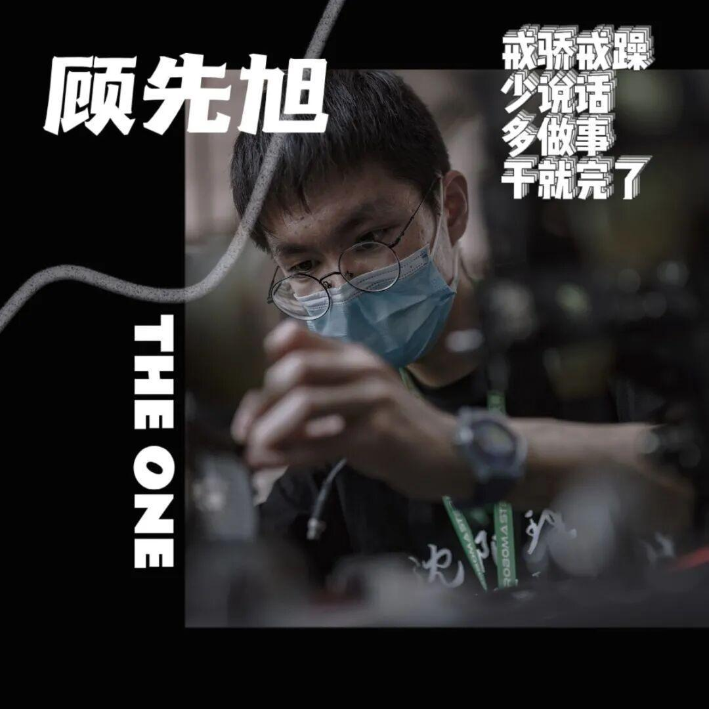
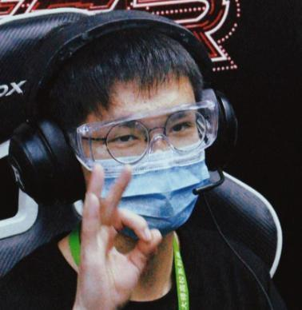

顾先旭 4号步兵操作手｜这是属于我的青春

他的座右铭是干就完了，少说话，多做事是他一贯的做事风格，人狠话不多，他说过在别人没有承认你的技术水平之前，多干事，少说话，这是永远正确的选择。
孔子说：讷于言而敏于行。许多时候，不需要说无谓的辩驳，还不如踏踏实实去做你应该做好的，比让别人觉得你很好更有意义的的是你清楚地知道自己应该做什么。顾先旭学长就十分清楚自己应该做什么。下面跟随我的问题来好好了解一下顾先旭学长吧。

感受繁多吧，在备赛的过程中非常辛苦，压力也非常大，同时队员之间还会因为一些事情发生争吵，因为每个人压力都很大，很多次都感觉坚持不下去了，但是每次看到大家都还在努力，没有人放弃，最终还是坚持了下来，尤其是在晚上，文体的灯一直都是亮着的，20多个人都在一起，为了一个目标，一起奋斗，回想起来很令人感慨。最让人感到热血沸腾的，是我们在北京，在检录区和备赛区，那里有非常多其他学校的队伍，能够和很多比我们厉害的学校，一起同台竞技，在赛场上为了自己队伍和学校的荣誉拼搏，真的让人感到很兴奋。在赛场上，确实非常紧张，身上肩负着整个队伍30多个人一年的努力，老学长对现在的队伍的期盼，学校的关注，以及直播间其他队伍的注视，尤其是第一把对阵辽宁科技大学，当时我们的工程机器人和英雄机器人迟迟过不了检录，当时心都到了嗓子眼，第一把可以说基本决定了我们后续的比赛走向，所幸，他们成功通过了检录，上场前，收到了好几个学长发来的消息，“加油”“稳住”，那一刻的热泪盈眶，心中的激动，无法用言语来形容。每一场比赛之后，都有很多的北理的研究生学长来备赛区看我们，给我们提出很多建议，指出我们一些战术上的问题，给我们加油。我们明白，真的很多人在关注我们，在给我们加油，给我们鼓气，肩负着学长未曾实现的梦想，一往无前的奔跑。小组赛出现后的对手是哈工大，曾经的国赛季军队伍，对手强大的让我们所有人感受到了窒息，但是没有任何一个人退缩，我们依旧是完善自己的车辆，商量该有的战术，纵然最后是2比0惨败，但是我们最后没有指责任何人，甚至场上我们工程给对面兑换金币的插曲，还让我们所有人都很欢乐，所以喜欢当时场上的一句话——“98%的队伍在这里被打败，然后变得更强”。当时最大的感触就是，不管比赛结果怎样，这都是我们自己努力的结果，这是属于我们自己的青春，别人体会不了的！

步兵是是一个基于麦克纳姆轮的四轮全向越障平台，纵臂式独立悬挂，搭载两轴云台和弹丸发射机构，是比赛中的一个兵种，是整个比赛的基础力量，具有较高的移动速度，以及突破能力，能够很好的打开局面，给英雄创造条件，对敌方防御塔造成大量伤害。

rm的备赛周期非常长，对学习的影响很大，可以说有好有坏。首先他会占用大量的时间，很多时候没有时间去进行理论课的学习，比如这次去北京参加北部区域赛，就会耽误一个星期的理论课程，但是他也是一种实践的过程，可以对学习到的理论课程进行一个很好的补充，比赛的过程当中能够发现很多的问题，学到很多的知识，理论课中的知识能够很好的在这些实践中被融会贯通。

我大一就来到了Ambition，来的目的就是为了能够学习更多的知识，不希望自己的大学四年碌碌无为，回头看看，这是一个非常正确的选择。在这里收获技术，收获友谊，收获属于自己的青春。

首先我觉得最重要的品质，就是坚持。在这里，坚持真的非常重要，因为会遭遇很多的挫折，技术不到位，或者做错事，会受到顾问，以及学长的指责，会有室友的不理解，会有一个问题卡几天无法解决的懵逼，会有不知前路何在的茫然，这些都会遇到，但是需要坚持下去，总有一天，你会发现你走过的路，自己都感到震惊。
第二个是对未知的探索精神，在Ambition浅尝辄止是不行的，需要去探索精髓，正如我们的口号“追求卓越，成功自来”，未来的路还有很长，需要每一个Ambition人需要有探索精神，去开辟未知的疆土，这样我们战队才能走的更远，取得更高的成就。

希望战队未来能越走越远，做的更好，能够培养更多的人才。我们今年依旧有未完成的愿望，希望以后的Ambition人，能带着我们的梦想，继续走下去！
听了学长的话，你有没有对战队有了更清晰的认识，是不是觉得学长也很平易近人呢。其实学长和我们平常人一样，只不过他们发现了自己所热爱的事，并为了自己的热爱愿意放弃一些娱乐等来成就自己的热爱，唯有热爱，方抵岁月漫长。让我们期待顾先旭学长在决赛赛场上散发光芒吧！

图片|运营组
文字|顾先旭，苗力文
排版|苗力文